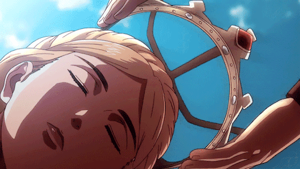

Historia Reiss es una figura central en Shingeki no Kyojin, cuya historia se destaca por su evolución y descubrimiento de su verdadero linaje como miembro de la familia real Reiss.
Inicialmente oculta su identidad bajo el nombre de Krista Lenz, una humilde y amable soldado del Cuerpo de Exploración,
conocida por su deseo de ayudar a los demás y su naturaleza bondadosa. A medida que la serie avanza, Historia se enfrenta a la verdad sobre su ascendencia y a las
responsabilidades que conlleva ser una legítima heredera al trono.
Su carácter evoluciona notablemente, pasando de ser una joven tímida y en conflicto a una líder decidida y compasiva, dispuesta a asumir su rol como reina para proteger
a su pueblo. Historia muestra una increíble fortaleza y capacidad para tomar decisiones difíciles, lo que la lleva a hacer grandes sacrificios personales por el
bienestar de la humanidad. Su historia es un testimonio de crecimiento, valentía y la lucha por encontrar su verdadero propósito en un mundo lleno de desafíos
y adversidades.
